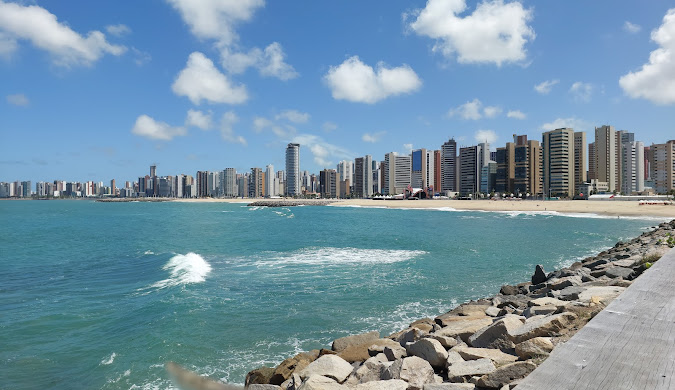

O Ceará, localizado no nordeste do Brasil, é um estado de paisagens deslumbrantes, que vão desde as dunas do Jericoacoara até o litoral com suas praias paradisíacas, como a de Canoa Quebrada. Fortaleza, a capital, é um centro vibrante de cultura, música e gastronomia, com destaque para o forró e pratos típicos como a peixada e a tapioca. O estado também é conhecido por sua rica história, marcada pela influência do cangaço e pela forte presença indígena. A economia cearense é impulsionada pelo turismo, pela indústria têxtil e pelo agronegócio, especialmente o cultivo de frutas. O Ceará é um lugar de calor, hospitalidade e muita alegria.
 Voltar